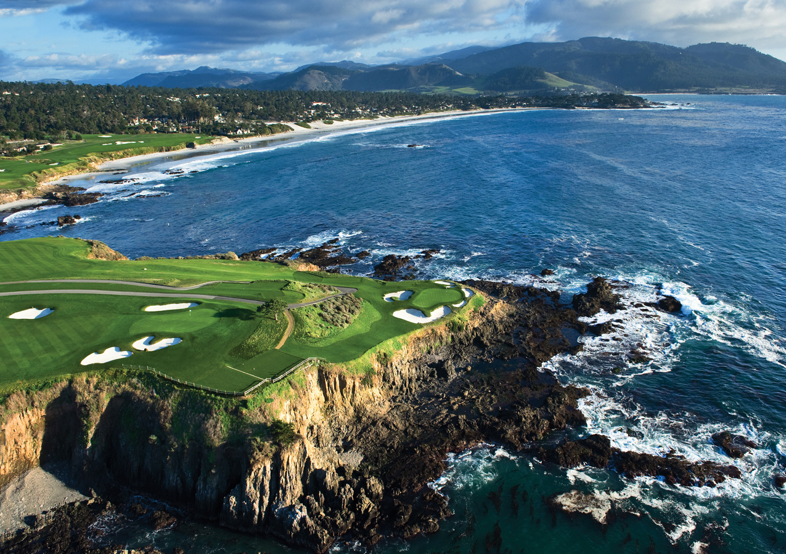

Our favorite hole at Pebble Beach Golf Course (hole seven)
Contact Us
About Us
Pebble Beach Company, headquartered in Pebble Beach, California, owns and operates the world-famous Pebble Beach Resorts, including The Lodge at Pebble Beach, The Inn at Spanish Bay and Casa Palmero at Pebble Beach. The company also operates four renowned regulation golf courses: Pebble Beach Golf Links, Spyglass Hill Golf Course, The Links at Spanish Bay and Del Monte Golf Course. In 2021, Pebble Beach teamed up with Tiger Woods to redesigned the fixture par-3 course, The Hay.